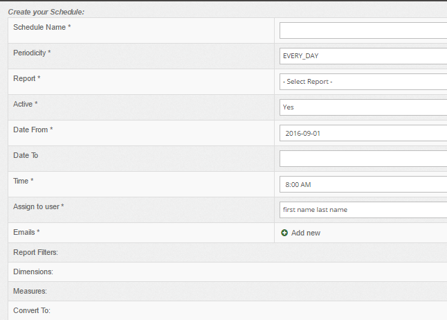
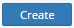
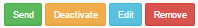
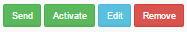
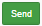
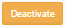
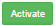
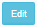

Section: Home Reports Scheduled Create
Description:
Раздел "Создать" позволяет создать запланированный отчет.
Для этого заполните необходимые поля
| Field | Description | Example |
|---|---|---|
| Schedule Name* | Название отчета | Test Schedule Report |
| Periodicity* | Период отчета
|
SEVEN_DAYS |
| Report* | Тип отчета
|
Summary |
| Active* | Активен или нет
|
Yes |
| Date From* | Дата ОТ | 2016-09-01 |
| Date To | Дата ДО | - |
| Time* | Дата (UTC формат) | 8:00 AM |
| Assign to user* | Выберите пользователя для назначения отчета | John Doe |
| Emails* | Ящик для отправки. Можно несколько | john.doe@test.com |
| Report Filters | Выбирете фильтры в зависимости от отчета | Примеры тут: |
| Dimensions | Выбирать размеры в соответствии с типом отчета | Примеры смотрите тут: |
| Measures | Выбирете меры в соответствии с типом отчета | Примеры смотрите тут: |
| Convert To |
|
EUR |
Пометка | Всегда заполняйте поля с пометкой *
Скриншот :

После этого нажмите кнопку 
Section: Home Reports Scheduled List
Назначение:
Данная секция отображает ранее созданные отчеты.
Примеры
| Name | Date From | Date To | Time | Periodicity | Report | Assigned to user | Actions | |
|---|---|---|---|---|---|---|---|---|
| Test1502-2 | 01.02.2016 | Infinite | 07 15 AM | EVERY_DAY | CHARGEBACK_RATIO | John Doe |  | |
| Test1541-2 | 09.10.2016 | 09.12.2016 | 09 15 AM | SEVEN_DAYS | CHARGEBACK_RATIO | John Doe |  |
Значение полей
| Активен | |
| Не активен | |
|  | Отправить сейчас |
|  | Перевести в не активный |
|  | Перевести в активный |
|  | Изменить настройки отчета |
| удалить | |